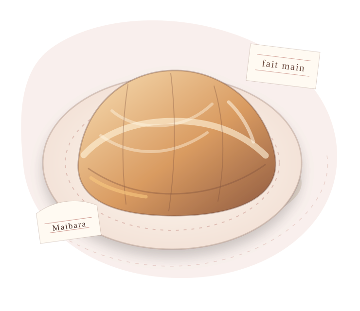
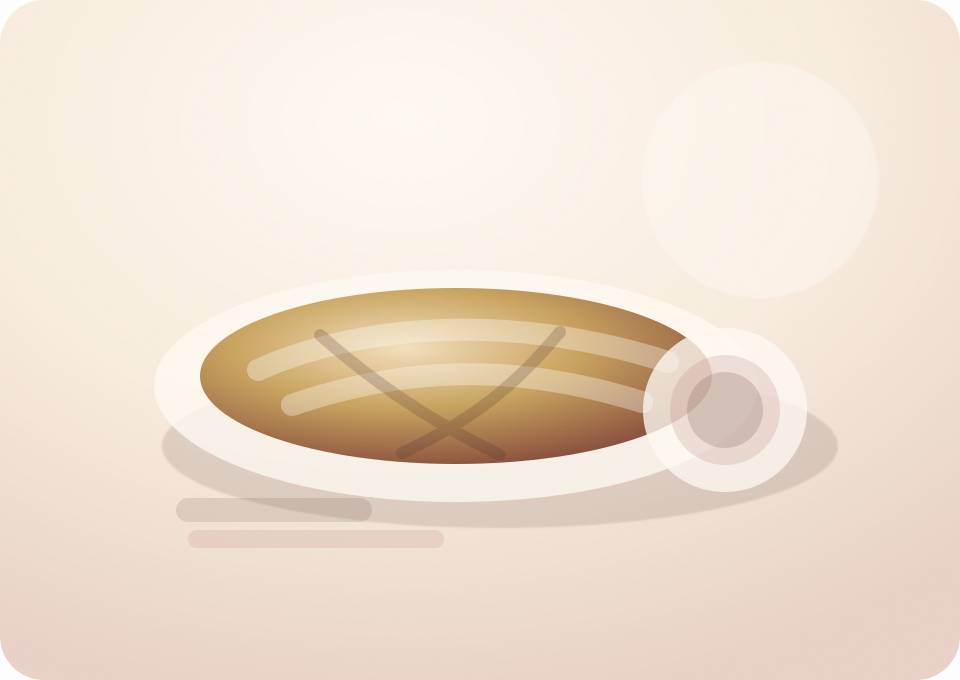

焼きたての香りと、
手仕事の余韻。
パイとフランは、素材の質と火入れがそのまま表情になります。バターの香り、卵とミルクのやさしさ、果物の酸味。派手に飾らず、ひと切れをゆっくり味わえるお菓子を目指しています。
Pies & Flans
滋賀・米原の小さな工房から、フランスの日常にあるやさしい甘さを。パイ生地の層、香ばしい焼き色、素材の素直なおいしさを大切に焼き上げます。ご購入はBASE公式ショップで受け付けています。

About Le Tomona
気取らないけれど、忘れられない。Le Tomonaが大切にしているのは、日常のなかに静かに残るおいしさです。
パイとフランは、素材の質と火入れがそのまま表情になります。バターの香り、卵とミルクのやさしさ、果物の酸味。派手に飾らず、ひと切れをゆっくり味わえるお菓子を目指しています。
街角の菓子店で選ぶような、素朴で温かな焼菓子。午後のお茶時間に寄り添う味を、米原から届けます。
香りの立ち方、焼き色、余韻まで見ながら、素材の持ち味がまっすぐ伝わるように仕込みます。
大量に作るより、きれいに焼くこと。季節や湿度の変化を見ながら、ひとつひとつ手を入れています。
Photo diary
イラストだけでは伝わりにくい温度感を、写真のようなやわらかなビジュアルで補いました。工房、看板パイ、ギフトの印象をひと目で感じられる構成です。

Choose by scene
はじめての方でも迷わないよう、食べる時間や贈る相手に合わせた入口を用意しました。
Signature
紙ラベルを選ぶように、今日のひと切れを。ギフトにも、自分の午後にも似合う焼菓子をそろえています。

香ばしく焼いたパイ生地に、りんごのやさしい甘みを重ねた看板商品です。

卵とミルクのなめらかな味わいを、パイ生地とともに楽しむ日常菓子です。

さくさくと軽く、バターの香りがほどける小さな焼菓子です。

旬の果物や素材に合わせて、その時期だけの香りを焼き込みます。
Le goût du beurre
パイは、きれいな層だけで終わりません。噛んだ瞬間の香り、焼き色の深さ、余韻の軽さまでを整えて、ひと切れの満足感へつなげます。
温めた瞬間にふわりと広がる、豊かな香りを大切にしています。
軽さと香ばしさが出るよう、生地の温度と休ませ方を見極めます。
焦げではなく、深い焼き色。見た目と香りの両方を整えます。
果物、卵、ミルクの味が前に出る、やさしい甘さに仕上げます。
How to enjoy
持ち帰ったあとも、焼きたての記憶に近づけるように。少しの手間で、香りと食感が変わります。
トースターで短く温めると、パイ生地が香ばしく戻り、りんごの甘みもやわらかく広がります。
冷蔵庫から出して少し置くと、卵とミルクのなめらかさが穏やかに立ち上がります。
開封後は密閉し、なるべく早めに。軽い食感とバターの香りをそのまま楽しめます。
Online store
このサイトでは商品の魅力、食べ方、ギフトや受け取り方法をわかりやすくご案内します。カート、決済、在庫管理などの購入手続きはBASEに集約し、安心してお買い物いただける導線に整えました。
ラインナップで味や保存方法を確認し、BASEの商品ページへ進みます。
数量、配送先、支払い方法はBASEの画面で安全に入力します。
発送・受け取り方法は商品ページと注文後の案内に沿ってご確認ください。
Gift from Le Tomona
誕生日、手土産、内祝い、季節のご挨拶、帰省土産に。淡いピンクベージュの世界観で、箱を開ける前からうれしいギフトを整えます。
Shop & Access
営業日や焼き上がりの近況はInstagramで、販売中の商品や在庫はBASEでご案内しています。小さな店のため、販売数に限りがあります。
販売日、季節のパイ、店頭受け取りのご案内はInstagramから。購入はBASE、日々の焼き色はInstagramへと役割を分けてご案内します。
Instagramで最新情報を見るQuestions
商品によって配送可否が異なります。パイ、フラン、焼菓子それぞれの受付内容はBASEの商品ページとInstagramでお知らせします。
商品ごとに異なります。お渡し時または発送時に、保存方法とあわせてご案内します。風味のよいうちに早めにお召し上がりください。
受付可能な日程と数量はBASEの商品ページまたはInstagramでご案内します。ギフトやお祝い用の場合は、商品ページの案内をご確認ください。
包装、手提げ袋、熨斗、メッセージカードについてご相談いただけます。商品や時期により対応内容が変わる場合があります。
小麦、乳成分、卵を含む商品を扱います。ナッツや果物を使用する季節商品もありますので、詳しくはご購入前にお問い合わせください。